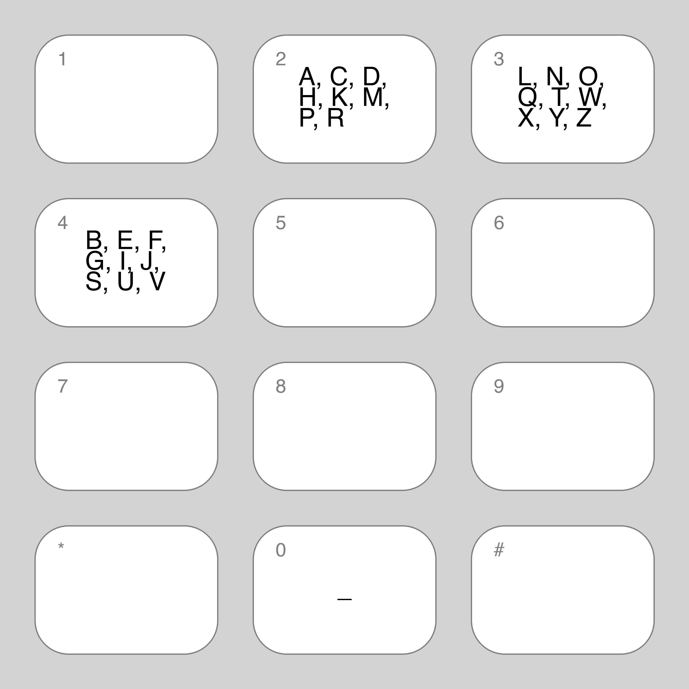

Optimising the T9 keyboard
Summary
- Rearranging the characters on a T9-style keyboard can reduce the number keystrokes per character typed (i.e. increase the typing efficiency of the keyboard)
- The improvement is enough for a 6-key layout to achieve similar efficiency to the standard T9 keyboard (8 keys)
Background
Recently, I watched this video by Guy Dupont on building a physical version of the T9 keyboard used on feature phones:
In it (at 2:09), he explains that one advantage of a T9 keyboard is that the ratio of keystrokes:characters typed is reasonably close to 1:1 (about 1.07 keystrokes per character according to MacKenzie, I. S. (2002)).
This got me wondering: could we rearrange the letters on a T9 style keypad to further reduce this ratio?
Wait a second, what is T9?
T9 is a type of keyboard software used on feature phones (phones with a 0-9 keypad) to allow easy typing of text messages.
A standard T9 keyboard looks something like this:
 Image from Wikipedia
Image from Wikipedia
To type on a T9 keyboard, you press the buttons corresponding to the letters you would like to type, and the predictive text algorithm will present the most likely interpretation of your keypresses.
Typically, the '#' key is reserved for scrolling through the different possible options to select your desired word. For example, the sequence of keypresses '227' is probably "car", and this is what T9 will select (assuming an English dictionary is loaded). However, if you instead wanted to type "cap", you would need to type an additional '#' (i.e. '227#' in all).
Helpfully, Guy Dupont has another video going into more information about the T9 algorithm and his implementation in another video. I enjoyed it and if you're not familiar with the typing experience on feature phones, or if you're curious about the details of such a project, I recommend checking it out.
How to find a better keyboard?
Some initial calculations suggest that it's probably not tractable to to solve the problem by brute force. If my (extremely rusty) combinatorics are right, there are approximately 3x1029 ways of arranging 26 alphabetical characters onto 8 identical buttons.
Even if we can evaluate a few thousand keypads per second, we'd be going nowhere very slowly.
Can machine learning help?
If we can't find an optimal solution by brute force, maybe we can find an approximately optimal solution by another method?
Like many side-projects with little real-world, practical use, machine learning is a good fit. Specifically, we can use a genetic algorithm.
A genetic algorithm is an iterative process. In each iteration, the algorithm takes a set of possible solutions (in this case, keyboard layouts), selects the best performing ones, then slightly modifies them top create the set of solutions for the next iteration. Typically, the initial set of solutions is generated randomly.
To use a genetic algorithm, we need a fitness function to evaluate any potential solutions. The genetic algorithm will then attempt to find the arrangement of alphabetical characters on the keypad that minimises this fitness function.
So in this case, the fitness function is the ratio of keystrokes per character typed.
To calculate keystrokes per character, we also need a representative body of text to type out.
The data
I created train and test sets of text, by taking lines of text from the following books (accessed via Project Gutenberg):
- Wizard of Oz
- Pride and Predjudice
- Frankenstein
- A Picture of Dorian Gray
- The Mayor of Casterbridge
- Jane Eyre
- Dubliners
- The Great Gatsby
I used half of the lines from these books as training data and the other half as test data, with lines being distributed at random between them. These books aren't representative of SMS content, but they are easy to access and, I hope, good enough to make a fair comparison between layouts.
I preprocessed the text by:
- Removing all punctuation (leaving only alphabetical characters and whitespace)
- Converting all characters to lowercase
- Removing all proper nouns (well, words starting with an upper case character) to avoid unusual place and character names from having an outsized impact on the results
The fitness function
As mentioned earlier, we need a fitness function to calculate keystrokes per character on the training text, for a given keypad. For this, I wrote a function that would use the training text to:- Construct a dictionary of valid words
- Work out the keypresses required to type each word including disambiguating '#'s (with priority based on the number of occurrences)
- Calculate the keystrokes per character for the training text
So, what is the (an) optimal layout?
Piping the fitness function and training text into a genetic algorithm (I used PyGAD), we get the following "optimised" keyboard layout:
Is this funky layout any good?
This keyboard had a keystroke ratio of 1.052 on the test data. In comparison, the standard T9 keyboard scored 1.130 (i.e. worse) on the same dataset. Assuming the test text is broadly representative, this works out to about 78 fewer keypresses per 1000 characters typed.
So it seems like some improvement is possible.
But... I'm not sure 78 fewer keypresses per 1000 characters is a particularly meaningful improvement in typing experience.
More keyboards?
If we can improve the keyboard with 8 keys for alphabetical characters, maybe we can improve it with fewer than 8 keys?
By optimising the layout of the letters, can we create a keyboard with fewer keys than T9, but comparable keystrokes per character?
To investigate this, I ran the same training routine as above for keyboards of size 2 up to size 7 (where the original T9 experiment is size 8, because the '1' key is reserved).
I also evaluated non-optimised "alphabetical" layouts for each keyboard size. These alphabetical layouts are analogous to the T9 arrangement: letters arranged on keys in alphabetical order.
These keyboards gave the following ratios on the test data:
As expected, the optimised keyboards consistently outperform than their alphabetical counterparts on the test data. The optimised 7- and 8-key layouts both perform better than the standard T9 keyboard.
Moreover, the 6-key layout performs comparably to the T9 layout. With an optimised arrangement of characters on the keys we can remove 2 alphabetical keys from the keyboard, without losing significant performance (about 6 additional keys per 1,000 characters). Not bad!
You can view the different layouts below. I decided not to show the results for 2- and 3-key layouts in the above chart, which would otherwise blow out the scale. However, they remain viewable below.
Alphabetical

Optimised
Alphabetical
Optimised
Alphabetical
Optimised
Alphabetical
Optimised
Alphabetical
Optimised
Alphabetical
Optimised
Alphabetical
Optimised
T9
Conclusion
To me, looks like evidence that we can improve the keystroke efficiency of the T9 keyboard by rearranging the letter positions. But in real life, switching away from a standard layout for the sake of a very minor efficiency gain in a single language would cause far more problems than it would solve.
I don't intend for this work to be anything more than a curio, but I can speculate about a couple of avenues for application of these ideas:
- Limited dexterity - For people with limited dexterity, would the reduction in button pressing on a 8-key keypad be worth the time to learn an unintuitive layout?
- Retro-fitting input devices - In cases where alphabetical input has to be retro-fitted to an input device with a limited number of buttons (or space), having an efficient, optimised layout could be useful. That said, I was unable to think of any examples, so I'm not sure if use-cases like this really exist...
- Niche domains - Since this approach is an optimisation, one could use such an approach to develop alternative layouts for specific domains. In other words, if you have to input lots of text that is very different from standard natural language, having the tools to develop a layout for your specific task could be useful (maybe?).
For serious applications, Optimal-T9: An Optimized T9-like Keyboard for Small Touchscreen Devices (Ryan Qin, Suwen Zhu, Yu-Hao Lin, Yu-Jung Ko, Xiaojun Bi; Paper, Talk) is a much more practical and thorough investigation of improving the T9 keyboard.
In it, the authors develop a Qwerty-like layout on 9 keys that combines the space-efficiency of the T9 with the familiarity and typing speed of a Qwerty keyboard:
A user study showed that its average input speed was 17% faster than T9 and 26% faster than a T9-like layout from literature. Optimal-T9 also drastically reduced the error rate by 72% over a regular Qwerty keyboard. Subjective ratings were in favor of Optimal-T9: it had the lowest physical, mental demands, and the best perceived-performance among all the tested keyboards.
Appendix / future developments / ideas etc
- Code for this project can be found on Github. I'd love to hear any feedback or ideas as issues, PRs or on Twitter.
- I didn't spend any time tuning the genetic algorithm hyperparameters. It is possible that a little more performance could be eked out with some tuning.
- Likewise, there's probably some scope to improve performance with more augmentation and transformation of the training data.
- What would it be like to actually type on one of these keyboards? How quickly do you get used to the new layout? Is the improvement in keystroke efficiency noticeable?
- What if we treated spaces and punctuation as just another character? Instead of using a dictionary to predict the text given the input (as in T9), we could use a language model to evaluate the most likely sentences typed. For long enough input sequences the statistics would bear out the correct character string. Perhaps this could enable us to reduce the number of input buttons down even further, maybe even down to... 2 inputs?